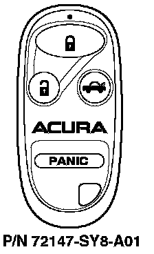

1997 2.2CL/1998 2.3CL/1997-99 3.0CL
1997 2.2CL with factory-installed security system1998 2.3CL with factory-installed security system
1997-99 3.0CL with factory-installed security system

Programming the Transmitter
NOTES:
^ This system accepts up to four transmitters.
^ Entering the programming mode cancels all learned transmitter codes, so none of the previously programmed transmitters will work. You must reprogram all of the transmitters once you are in the programming mode.
^ You must perform each of the first twelve steps within 5 seconds of each other to enter programming mode. Programming each transmitter (step 13) must be done within 10 seconds.
1. Make sure the doors are unlocked.
2. Turn the ignition switch to ON (II).
3. Press the "LOCK" or "UNLOCK" button on the transmitter.
4. Turn the ignition switch to ACCESSORY (I) or LOCK (0).
5. Turn the ignition switch to ON (II).
6. Press the "LOCK" or "UNLOCK" button on the same transmitter.
7. Turn the ignition switch to ACCESSORY (I) or LOCK (0).
8. Turn the ignition switch to ON (II).
9. Press the "LOCK" or "UNLOCK" button on the same transmitter.
10. Turn the ignition switch to ACCESSORY (I) or LOCK (0).
11. Turn the ignition switch to ON (II).
12. Press the "LOCK" or "UNLOCK" button on the same transmitter. Make sure the door locks cycle to indicate that the system has entered programming mode.
13. Press the "LOCK" button on each transmitter that is being programmed. Make sure the power door locks cycle each time to indicate the transmitter has been accepted.
14. Turn the ignition switch to LOCK (0) to exit the programming mode.
Turning the Audible Chirp On/Off
To turn the audible chirp on, press and hold the "TRUNK RELEASE" button, then immediately press and hold the "LOCK" button. The LED on the transmitter will come on for one second. Release the buttons when the LED goes out. Repeat this procedure to turn the audible chirp off. The LED will blink twice.
Ordering a Transmitter
Transmitters can be ordered only by authorized Acura dealers. Order them from American Honda using normal parts ordering procedures.
Batteries for the Transmitter
The battery number is CR2025. Each transmitter uses one battery.